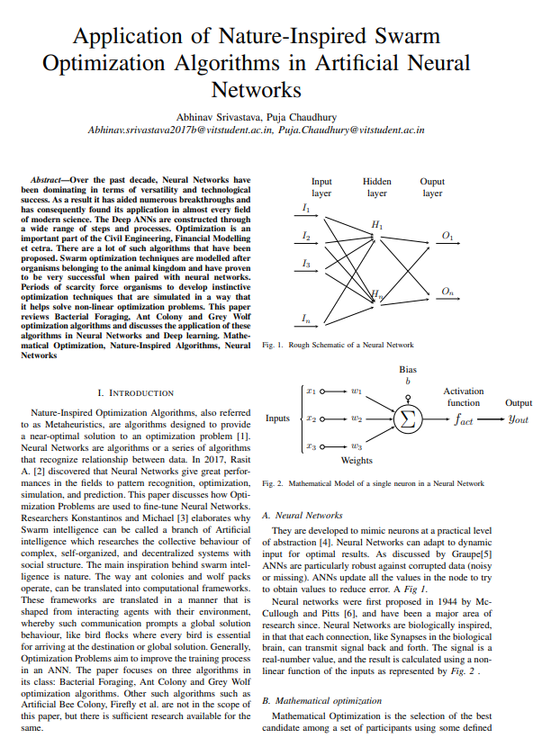

ICAISE 2021, IEEE Madras Section
International Conference on Artificial Intelligence and Smart Systems

Brief Description
Independent research
Swarm optimization techniques are modelled after organisms belonging to the animal kingdom and have proven to be very successful when paired with neural networks. Periods of scarcity force organisms to develop instinctive optimization techniques that are simulated in a way that it helps solve non-linear optimization problems. This paper reviews Bacterial Foraging, Ant Colony and Grey Wolf optimization algorithms and discusses the application of these algorithms in Neural Networks and Deep learning.
Main focus of the paper
- Artificial neural network
- Swarm algorithms
- Mathematical optimization
- Applications in Engineering